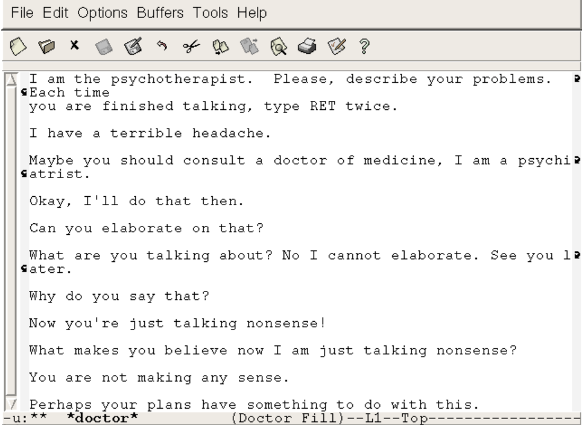
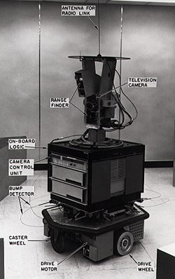
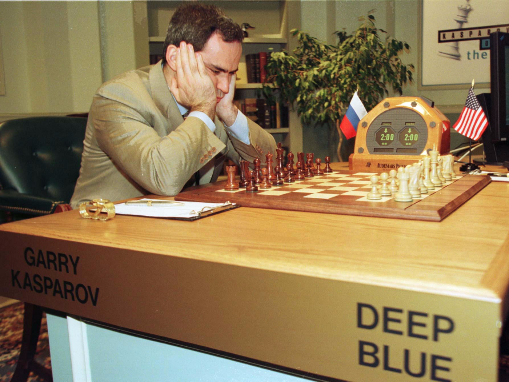
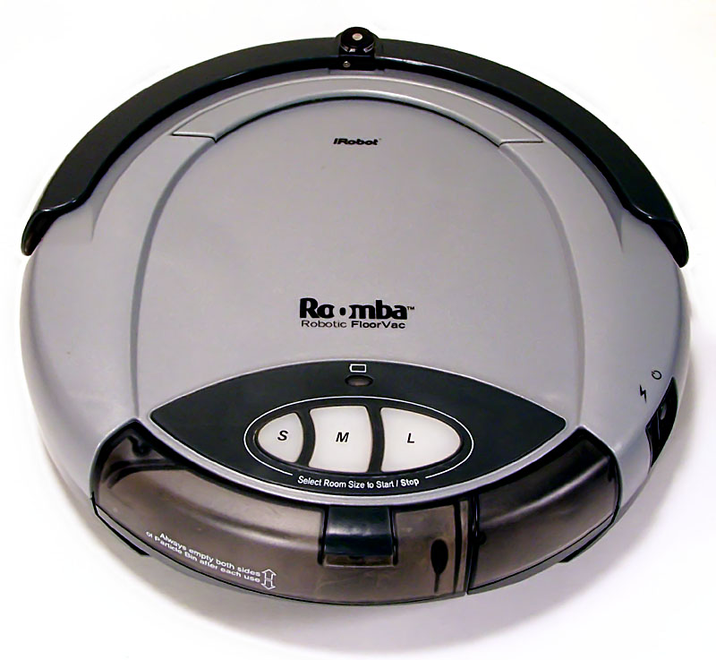
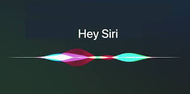
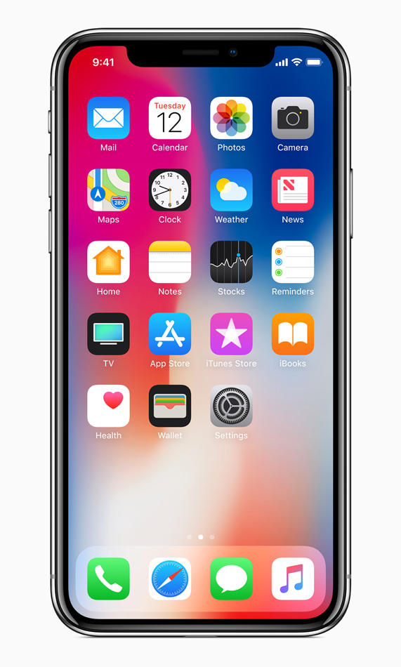

1950 Turing Test Alan Turing introduces the Turing test, a test to identify if a proggram is truly intellegent baced on if it can reliably fool humans. The test states if a proggram can pass for a humman then it is intelligent. A person will ask a human and a robot questions and they have to tell which is the robot.
Game AI 1951 Arthur Samuel wrote a checkers proggram which eventually was skilled enough to beat amiture cheker players.

1964 First ChatBot Created by Joseph Weizenbaum, the chatbot 'Eliza' was able to understand simple key words and give simple responises.

1966 Shakey the Robot Shakey, created mainly by Charles Rosen, was able to take general instructions, then use its sensors to understand its invronment and perform its task.

1997 Deep Blue Deep Blue was an AI proggram developed by IBM, which beat the world champion Chess Player. Its a form of weak AI which using a brute force method to find all possible combinations of moves, was able to predict which move would create the best outcome.

2002 Romba Roomba is the first robot vacum cleaner, using a very basic AI system to detect obsticles and move out of the way.
2011 Siri Siri is a more complex AI system, using speach recognition AI technology and an AI system to inteperate the sentence. Sir then sellects an approperate response from her libary of actions/responses.

2015 Alpha Go Alpha Go is a deep learning AI which was developed to beat the world chappion Go player which happened 2015.

2017 iPhone X Facial Recognition Apple's iPhone X was a break through in consumer facial recognition, using a range of sensors to quickly scan a face.
2021 DALL - E 2 DALL-E 2 is one of the many AIs creating artworks baced purly off a short description. Alot of the art generated looks like a humman had created it. Some of the art it can generate is acttually beautiful.